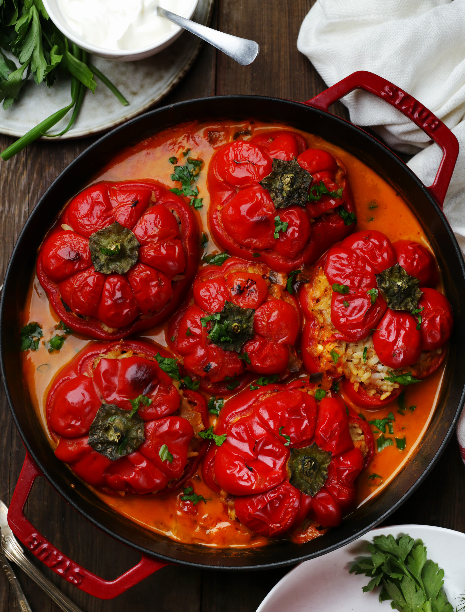

Молдавские гогошары — в меру мясистые и ароматные приплюснутые перцы. Чаще всего они сладкие и неострые, но попадаются отдельные экземпляры-«сюрпризы», обладающие довольно явственной остротой. Для любителей погорячее это даже плюс, но стоит быть внимательными и предварительно слегка попробовать гогошары на зубок. Такие перцы очень удобны для запекания или тушения в сотейнике, к тому же выглядят весьма живописно. По данному рецепту можно приготовить любые другие сорта сладкого перца, но взять глубокую кастрюлю с толстым дном или казан, поскольку они намного выше, чем гогошары. Для этого же рецепта удобнее использовать посуду, в которой можно жарить и тушить, а затем поставить в духовку. Но, как вариант, перцы и соус можно для запекания переложить в форму. Одна из отличных особенностей этого блюда — добавление в фарш не только риса и мяса, но и пассерованных овощей: кроме привычного лука и моркови можно использовать баклажаны, болгарский перец, помидоры. Часть пассеровки — в соус, часть — в фарш.